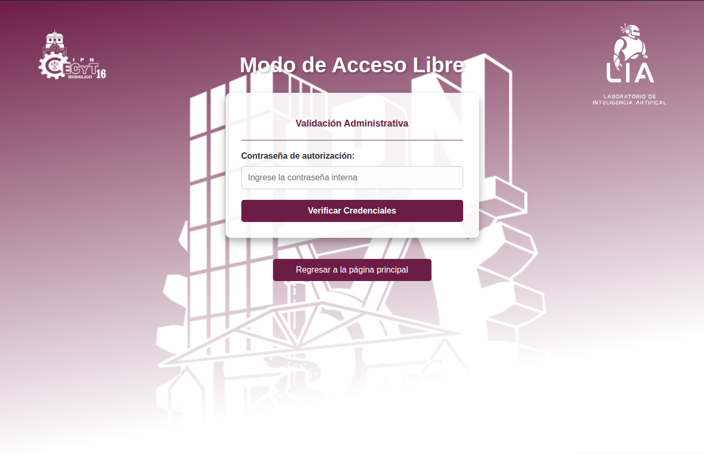

Grupo a seleccionar
Establece el grupo a registrar para posteriormente registrar la credencial y el horario.

Pases de salida
Establece pases de salida temporales para un grupo especifico con su horario correspondiente al día.

Manejo de Suspensiones
Maneja las suspensiones mediante elegir el grupo y posteriormente la boleta del suspendido.

Gráfica de entradas y salidas
Visualizacion gráfica de cuántos alumnos entran y salen cada semana, para tener un conteo real y práctico.

Reinicio de base de datos
Se BORRA TODO los registros, usar con cuidado. De igual forma se selecciona el nuevo semestre y la cantidad de grupos.

Acceso ilimitado temporal
Acceso a cualquier alumno con QR institucional sin importar el horario. Recomendado a inicios de semestre.
